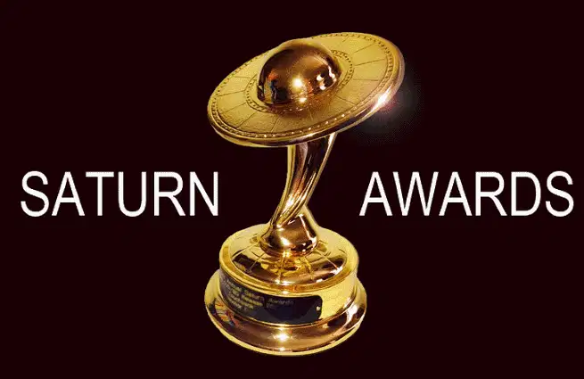
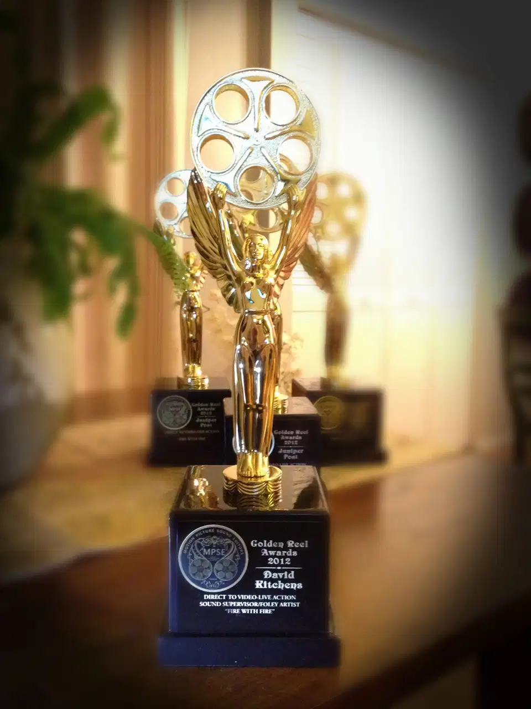

Saturn Awards (37e cérémonie) : Lauréat du prix du Saturn Award de la meilleure série télévisée.
Lors de la 37e cérémonie des Saturn Awards, qui s'est déroulée le 23 juin 2011 et récompensait les productions de l'année 2010,
notament Meilleure présentation télévisée (Best Television Presentation), qui fut attribué à The Walking Dead

Golden Reel Awards : Lauréat du meilleur montage sonore pour un format court à la télévision (dialogues et ADR) pour l'épisode Tripes.
La série télévisée The Walking Dead a remporté ce Golden Reel Award pour l'épisode Tripes (titre original : Guts, saison 1, épisode 2), diffusé sur la chaîne AMC.
• Superviseur du montage sonore. Walter Newman
• Superviseure du montage des dialogues. Darleen Stoker
• Superviseur du montage ADR (post-synchronisation). Lou Thomas
• Monteur des dialogues. Bruce M. Honda
• Monteurs ADR. Peter Austin, Karyn Foster et Skip Schoolnik